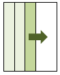

使用するアルゴリズムを固定します。
-algorithm を指定しない場合，以下の順で直交表を作成できるか試します
レベルを２と見なして生成します。各パラメタの値の個数が揃っていない場合は，
２のべき乗になるように，自動で補完します。
また，補完した要素には"(D)"をつけます。
model_file_02.txt
AAA : a_1,a_2,a_3 BBB : b_1,b_2 CCC : c_1,c_2
[hyam@hyam sample]$
OAG -algorithm GF
model_file_02.txt
AAA BBB CCC a_1 b_1 c_1 a_1 b_2 c_2 a_2 b_1 c_1 a_2 b_2 c_2 a_3 b_1 c_2 a_3 b_2 c_1 a_1(D) b_1 c_2 a_1(D) b_2 c_1
レベル数はOAG側である程度自動判定しますが，
レベル数を明示的に指定する場合は，-levelオプションを使います。
ダミーレベルを補完したときに，"(D)"をつけません。
model_file_02.txt
AAA : a_1,a_2,a_3 BBB : b_1,b_2 CCC : c_1,c_2
[hyam@hyam sample]$
OAG -algorithm GF
-noD model_file_02.txt
AAA BBB CCC a_1 b_1 c_1 a_1 b_2 c_2 a_2 b_1 c_1 a_2 b_2 c_2 a_3 b_1 c_2 a_3 b_2 c_1 a_1 b_1 c_2 a_1 b_2 c_1
レベル数を明示的に指定します。
[hyam@hyam sample]$
OAG -algorithm GF -level 3
model_file_02.txt
AAA BBB CCC a_1 b_1 c_1 a_1 b_2 c_2 a_1 b_1(D) c_1(D) a_2 b_1 c_2 a_2 b_2 c_1(D) a_2 b_1(D) c_1 a_3 b_1 c_1(D) a_3 b_2 c_1 a_3 b_1(D) c_2
レベルを3にすると，パラメタの数が3のべき乗でないBBBとCCCを，
3のべき乗になるよう補完して生成します。
常にレベル2でダミーレベルの補完ありにしておくと，
どのようなモデルファイルであってもそれなりに生成できます。
OAG -algorithm GF
-level 2 -noD モデルファイル
計算途中の情報を表示しません。
Xuのアルゴリズムを使った場合は，デフォルトでは途中経過を出しています。
（時間がかかる場合があるため）
ただし生成したものが直交表でない場合は，-qオプションをつけていても
J2-Optimalityなどを表示します。
ランダム生成のseedに時間を使います。
このアルゴリズムでは，乱数を使いますが
固定シードのため，条件が同じなら毎回同じ結果になります。
（回帰テストのために，わざとそうしています）
毎回ランダムにする場合は，-TimeSeedオプションをつけてください。
列追加時の，試行回数を指定します（デフォルト10回）
テスト回数（run size）を明示的に与えます（デフォルトは自動計算）
model_file_02.txt
AAA : a_1,a_2,a_3 BBB : b_1,b_2 CCC : c_1,c_2
であれば， ３×２×２＝１２ のように無条件に全組合せを生成します。
モデルファイルによっては件数が膨大になります。
モデルファイルから生成される直交表と同サイズのランダムな配列を生成します。
実際にテストに使った場合の効果を直交表と比べるための用途です。
テスト回数（run size）を明示的に与えます（直交表と同サイズ）
ランダム生成のseedに時間を使います。
テスト件数が膨大となるようなモデルファイルでは，直交表が計算できない場合が多々あります。
その場合でも，-algorithm CAでは生成できる可能性が高いです。
-noStreamの場合，生成したデータを配列に蓄積します。
-Streamの場合，生成したデータをそのまま標準出力に流します。
-algorithm all または random では，-Streamがデフォルトです。
特に-algorithm all では，生成データが大量になる場合があり，-noStreamではメモリ不足になる
可能性があるためです。
ただし，データを蓄積せず流すため，因子間網羅率など-showで出す情報を計算できません。
逆に-algorithm GF または Xuの場合，-streamは選択できません。
これらのアルゴリズムでは，テストケース全体を横に成長させていくからです。
